SSHD2382 · Category 13
Product Design
1. Scope
This category has about 9 books, and their themes are tightly focused: minimalism and Muji.
| Theme | Key books | Focus |
|---|---|---|
| Origins of minimalism | 《產品極簡主義》, 《簡約不簡單》 | Constructivism, De Stijl, Bauhaus, "less is more", "less, but better" |
| Muji | 《無印良品的設計》, 《解密無印良品》, 《無印良品世界觀》 | Product development process, observing daily life, systematised management, globalisation |
| Product design methods | Campos, 《創新產品設計與手繪》 | Sketching, form development, prototyping |
| Design and society | 《中國、德國產品設計回望》 | Product design under different political and economic systems |
| Design philosophy | Naoto Fukasawa, 《意識的核心》 | Design without thought |
2. Core Concepts
2.1 The Origins of Minimalism
timeline title Origins of product minimalism 1910s–20s : Russian Constructivism : Dutch De Stijl 1919–1933 : Bauhaus Weimar Dessau Berlin 1947 : Mies, Less is more 1950s–60s : Ulm School of Design : Braun and Rams 1980 : Muji is born 1990s–now : Naoto Fukasawa : Nendo : Contemporary Nordic design
- Constructivism and De Stijl: used geometric shapes, primary colours and structure to express a new age, and rejected ornament (Vladimir Tatlin's design for the Monument to the Third International is the classic example).
- Bauhaus: the unity of art and technology; standardisation and industrial production in the service of ordinary people.
- Ludwig Mies van der Rohe: "less is more" — achieving the greatest expressive power with the fewest elements.
- Dieter Rams: "less, but better" (Weniger, aber besser) — not less for its own sake, but removing what is unnecessary so that what is necessary becomes better.
2.2 Rams's Ten Principles of Good Design
《簡約不簡單》 arranges these as "ten commandments of design" and proposes two working methods for minimalist design: do only one thing at a time; know where the problem lies.
2.3 Japanese Minimalism
《產品極簡主義》 interviews Nendo and other Japanese design teams and sums up the features of Japanese minimalism:
- Humour and surprise: adding a small "aha" moment to a minimal form (a technique Nendo often uses).
- Design without thought: Naoto Fukasawa argues that design should fit the unconscious behaviour people already have — for example his wall-mounted CD player, which starts playing when you pull a cord, as naturally as switching on an extractor fan.
- Material and touch: close attention to the feel and warmth of the material itself.
- Empty space and ma (interval): linked to Kenya Hara's aesthetics of "white" (see 15 Design Theory & Psychology).
2.4 Muji: "This Will Do"
Muji was born in Japan in 1980. Creators including Ikko Tanaka, Kazuko Koike and Takashi Sugimoto helped shape its concept. Its three original principles were:
| Principle | Meaning |
|---|---|
| Selection of materials | Choose suitable, inexpensive materials, including materials that were overlooked in the past |
| Streamlining of processes | Leave out processing steps that do not affect quality (for example, no bleaching, and not cutting off irregularly shaped parts) |
| Simplification of packaging | Remove unnecessary packaging and cut costs with uniform, plain packaging |
Muji does not aim for "this is the best" (strong desire and individuality) but for "this will do" — a confident restraint. After Kenya Hara became art director, he expressed the idea of "emptiness" through the "Horizon" advertising series: the brand is like an empty container into which each person puts their own meaning.
3. Principles & Methods
3.1 Muji's Product Development
《無印良品的設計》 uses diagrams to reveal its product development process:
flowchart LR obs["Observe daily life<br/>visit users at home"] --> idea["Find needs<br/>feel how life is lived"] idea --> board["Advisory board<br/>outside designers join"] board --> proto["Prototypes and trials"] proto --> check["Weekly detail checks"] check --> launch["Launch and store display"] launch -.customer feedback.-> obs
- Observation research: designers visit users' homes and photograph where every object is kept and how it is used. They look for problems in real life, not in market data.
- Redesigning home appliances: when appliances got stuck competing on price and features, Muji chose to make them blend quietly into daily life, "like a wall".
- Systematisation: MUJIGRAM: in 《解密無印良品》, Tadamitsu Matsui explains that Muji wrote its store operations, product development and service into manuals. "Once a decision is made, it is carried through to the end", and the manuals are constantly updated — so the philosophy can be reproduced around the world (《無印良品世界觀》).
3.2 The Product Design Development Process
Campos's 《創新產品設計與手繪》 collects a large number of designers' process sketches. They can be summarised as:
| Stage | Tools | Purpose |
|---|---|---|
| Concept sketches | Pencil, marker | Explore many directions quickly |
| Form development | Sketches from several angles, sections | Study proportion, operation and structure |
| Rough models | Paper, foam, clay | Feel the size and weight in your hand |
| Digital modelling | CAD, 3D modelling | Precise dimensions, mould feasibility |
| Prototype | 3D printing, CNC | Test function and user response |
| Preparing for mass production | Engineering drawings, material and surface finish specifications | Communicate with the factory |
3.3 Life Cycle and Eco-design
3.4 Design and Society: China and Germany Compared
《20 世紀 50–80 年代中國、德國產品設計回望》 compares products from two societies in the same period:
- Germany: the Ulm School of Design and Braun established a rational, systematic approach to industrial design; East and West Germany each developed different product languages.
- China: under the planned economy, product design stressed durability and standardisation. Revolutionary symbols and political images were common on the surface (for example the red-covered book of quotations, and everyday goods printed with slogans), showing how design carried the ideology of its time.
This reminds us that the form of a product is never just the result of function and aesthetics. It is also a product of economics, technology and politics.
3.5 Minimal Does Not Mean Crude
- Minimalism removes distraction so that function and material become clearer; crudeness removes thinking.
- Minimalism often needs more engineering and detailing: hidden screws, precise tolerances, one-piece moulding.
- A minimal product should be understandable: if users need a manual to find the buttons, it is not good minimalism (see Norman's affordances and signifiers, 15).
4. Selected Figures
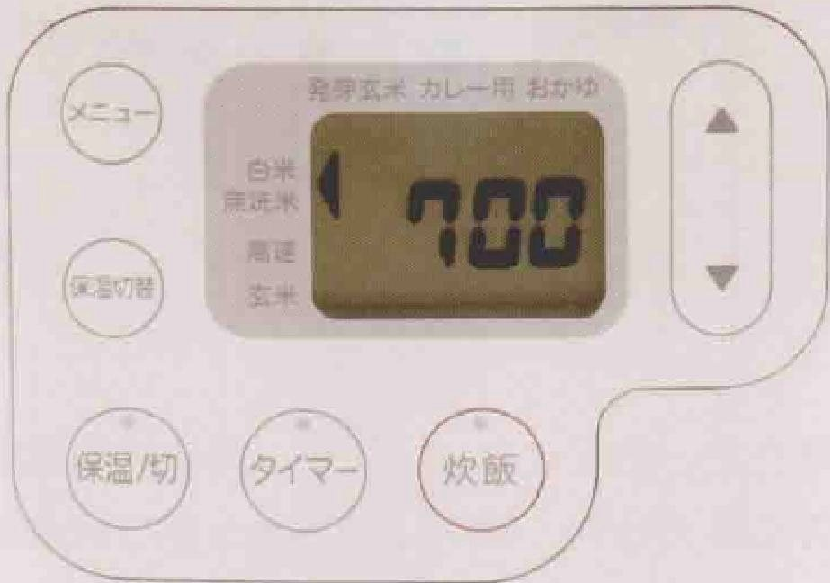
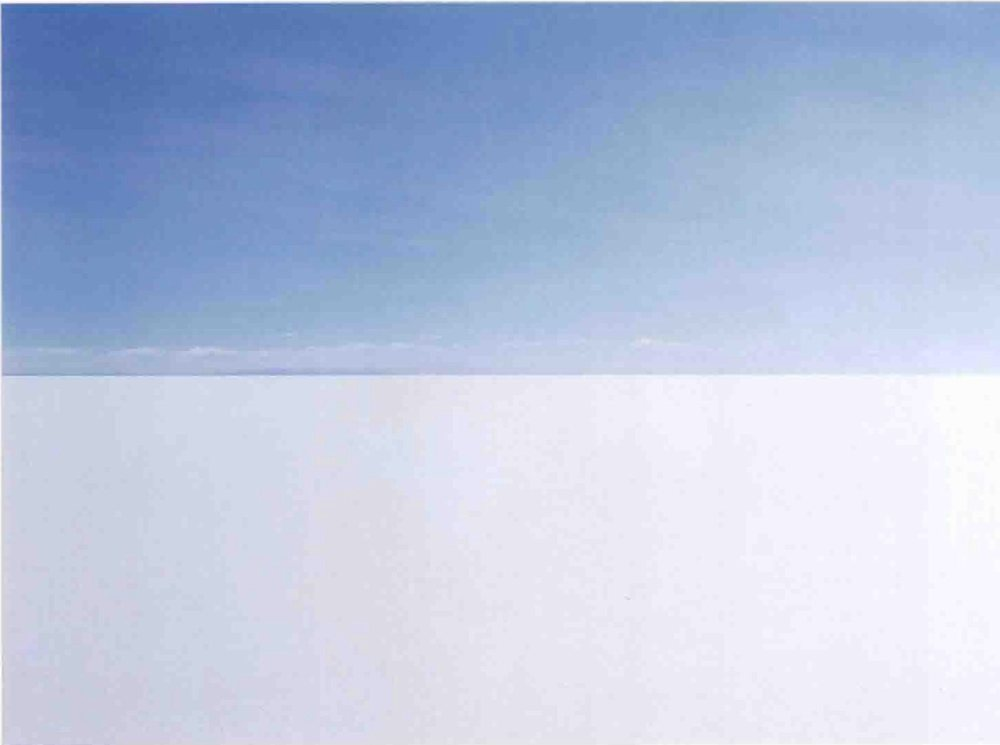
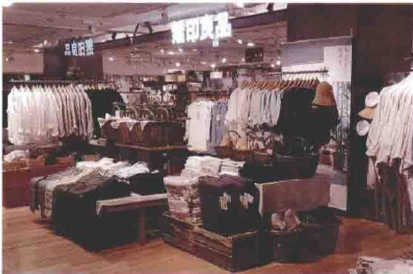
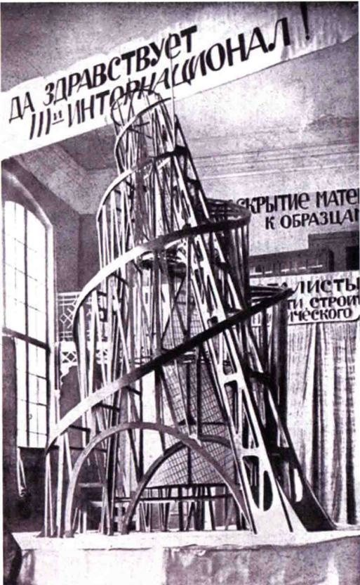
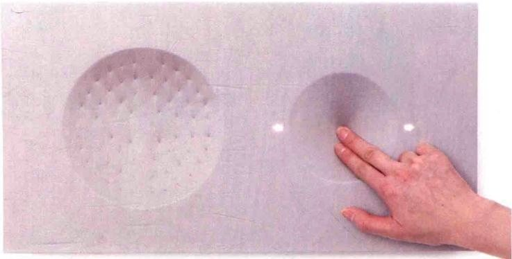
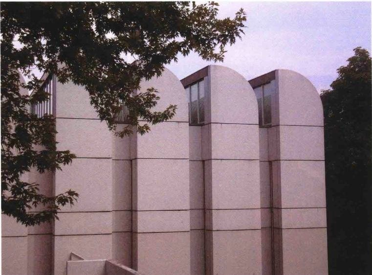
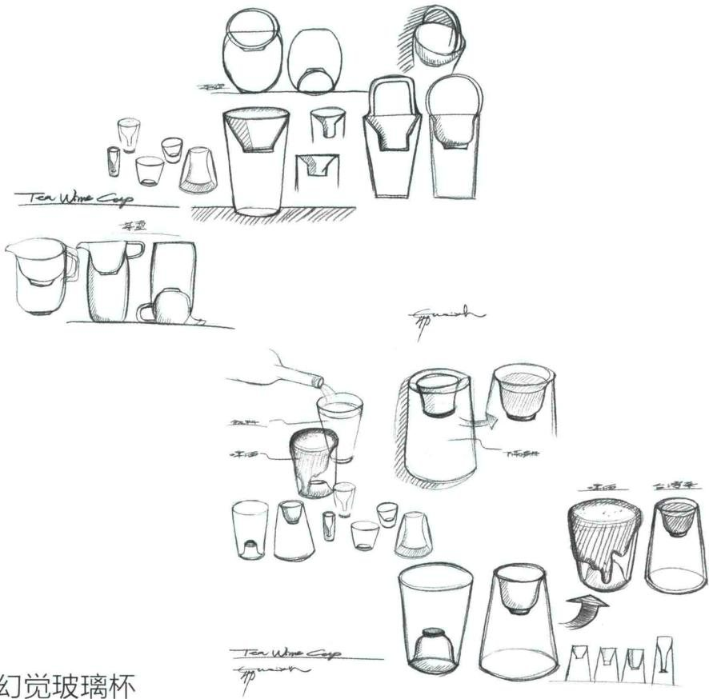
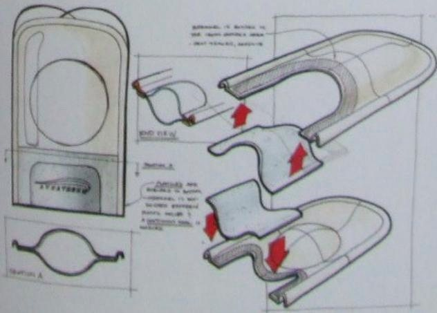
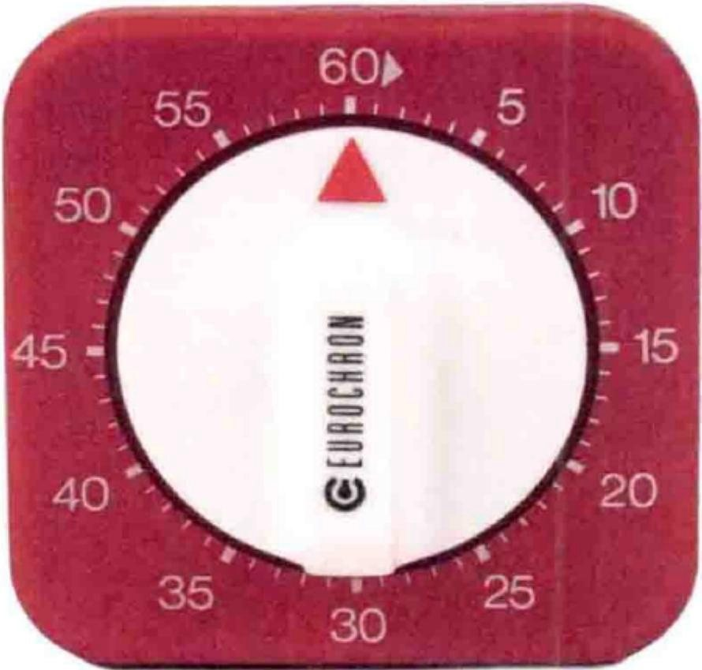
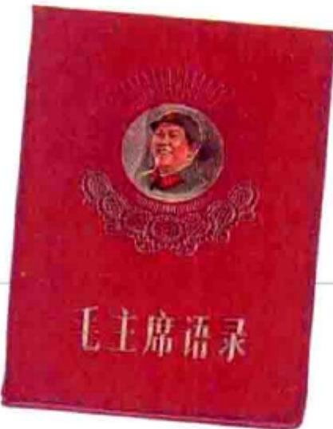
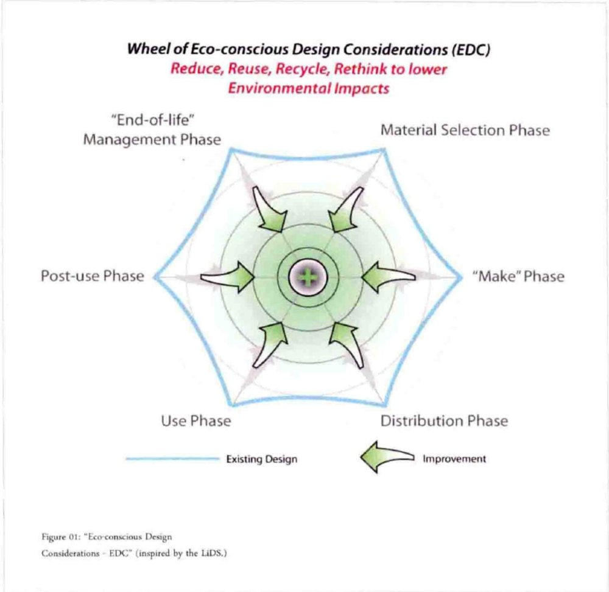
5. Source Bookshelf
Suggested reading order: 《產品極簡主義》 (origins) → 《無印良品的設計》 (process) → 《解密無印良品》 (management) → Campos, 《創新產品設計與手繪》 (methods).
Show 9 titles
- [132]簡約不簡單：極簡風格產品設計 - [135]產品極簡主義 - [243]無印良品的設計 - [244]解密無印良品 - [263]20 世紀 50–80 年代中國、德國產品設計回望 - [266]無印良品世界觀 - 創新產品設計與手繪 - 深澤直人 - 意識的核心6. Study Cues
- Score a product you use every day against Rams's ten principles. Which one is weakest?
- Visit a friend's home and watch how they use an everyday object (for example a cup or a remote control). Record three needs that are not being met.
- Draw 20 concept sketches for an everyday object, then pick one and make a paper model.
- Explain the difference between "this will do" and "this is the best", and give an example of a brand.
- Choose a product and propose one environmental improvement for each of the six stages of its life cycle.
- Where is the line between minimal and crude? Explain using a product you think is "too crude".
7. Each Book
Each book in the bookshelf is described below. Every title above links to its section.
簡約不簡單：極簡風格產品設計
Scope. This is an introductory explanation of minimalist product design. It moves from "what is minimalism" to the Bauhaus, then uses Mies's "less is more" to look at real objects. Read it first to build your vocabulary, then move on to the books on Rams and Muji.
Main ideas
- Minimalism is not another word for "emptiness". Mies described it as "less is more": remove unnecessary ornament and let technology and function become the expression.
- The book uses the three phases of the Bauhaus (Weimar, Dessau, Berlin) to show where these ideas came from. It then uses the Farnsworth House to show how glass, steel and the absence of extra parts combine into a single whole.
- Applied to everyday objects, minimalism means doing one thing at a time and letting people see what that one thing is.
- The small objects in the book (for example a clock you can write on in its empty space, or a rack held together without glue) show that fewer parts can still have a clear purpose.
Methods
- When you describe a product, first write down "the one thing it does", then list the parts you could remove. It only counts as minimal if the function still works after they are gone.
- Check yourself with two working rules: do one thing at a time; know where the problem is first.
- Do not treat "white, sans-serif, very few buttons" as a recipe for the minimal look. Change the structure first, then talk about appearance.
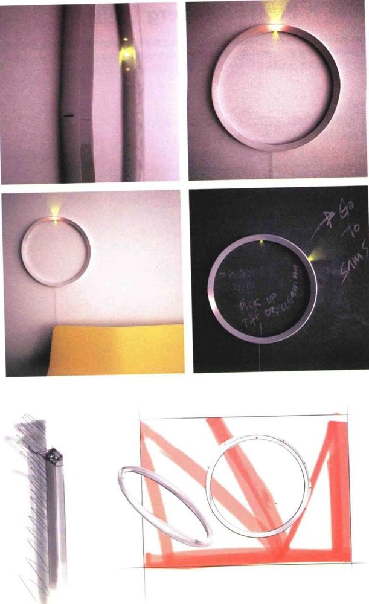
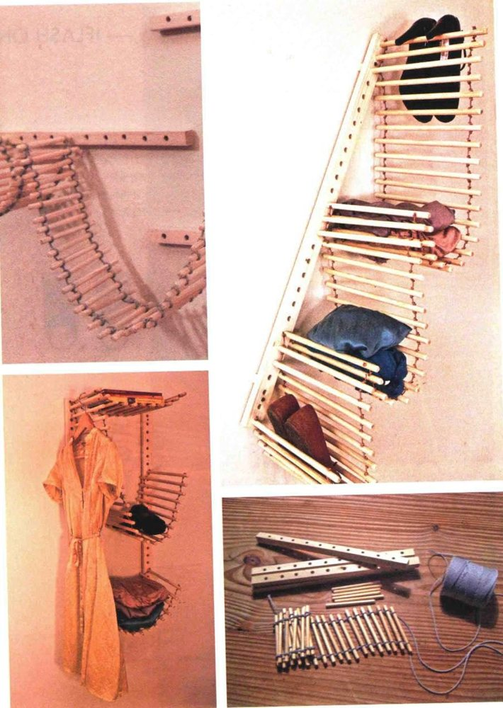
Study cues
- Explain "less is more" in your own words. How is it different from "nothing at all"?
- Choose a piece of stationery, write down three things it does at the same time, then try to change it so it does only one.
產品極簡主義
Scope. This book places minimalist products back in their regions and origins: Germany, the Nordic countries and Japan, as well as Constructivism, De Stijl and the Bauhaus. It also lists Dieter Rams's ten principles of good design in full, so it works well as a scoring sheet.
Main ideas
- The line of origins runs: Russian Constructivism, Dutch De Stijl, the Bauhaus, then Mies's "less is more", and finally Braun and Rams.
- The ten principles of good design: innovative, useful, aesthetic, understandable, unobtrusive, honest, long-lasting, thorough, environmentally friendly, as little design as possible.
- Japanese minimalism has other sources: restraint in the use of materials, and the habit of "removing the unnecessary" that came from Zen becoming part of daily life. The book uses objects by studios such as nendo to show that minimalism can still hold a quiet ingenuity.
- The book compares Apple's later products with Rams: less, but every part still does work.
Methods
- Score an everyday product against the ten principles. The two lowest scores show where to redesign; do not try to change all ten at once.
- When you analyse a Japanese or Nordic product, record separately "what has been removed" and "what feeling it still gives" (warmth, weight, sound).
- When you make your own model, start with one material and one type of joint. Write down a reason before you add a second.
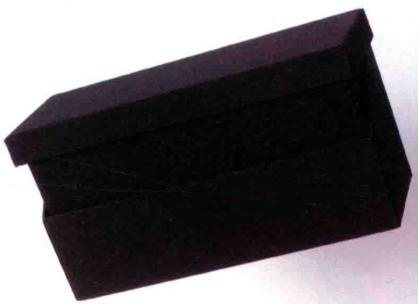
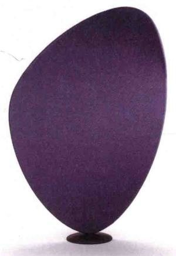
Study cues
- It does not matter if you cannot recite all ten principles. Choose three, and for each give one product that meets it and one that does not.
- Constructivism and Japanese minimalism are both "less". How do their reasons for being less differ?
無印良品的設計
Scope. This book uses diagrams to show how Muji's products and stores are made. Its focus is on observing daily life and on the weekly detail checks; it is not a collection of brand slogans.
Main ideas
- Product development starts by observing real homes: where water is used, how bedrooms are stored, where keys and watches are put down. The team looks at how objects are used, not at trends in a catalogue.
- Observation teams are made up of people from different specialisms (designers, textiles, electronics). People from the same specialism tend to notice the same things.
- It is best to visit relatives or friends. If the hosts do not know you well, they tidy up first, and the real look of their life disappears.
- The process includes an advisory board and weekly detail checks. An idea only becomes a product after repeated checking.
- The stores do not try to be "very fashionable shops". The attitude is to change, but not to change for the sake of change.
Methods
- Before starting a product project, visit a real home and take ten photos of "where things are actually kept", then write down three unmet needs.
- When observing, ask people questions rather than just measuring. People's explanations often reveal more than the objects themselves.
- Set aside one session a week to "change details only": corners, joints, label position. Do not redo the concept every time.
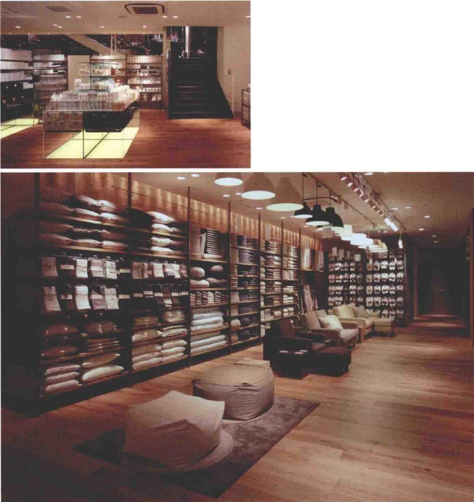
Study cues
- Why does Muji observe the homes of people it knows, rather than tidied-up show flats?
- Use the "different specialisms look together" method: look at your desk with a classmate who is not a designer, and each write down three findings.
解密無印良品
Author: Tadamitsu Matsui
Scope. Tadamitsu Matsui writes about Muji's management system, not the look of its products. At its core is MUJIGRAM, a store manual some two thousand pages long: it turns individual experience into standards that can be passed on.
Main ideas
- Without standards, there can be no improvement. The manual turns service that relied on personal intuition into a system.
- MUJIGRAM and the business standards manual cover store opening, product development, the sales floor and service. They contain a large number of photos and diagrams.
- The manual lets staff make decisions even when their manager is not there, so it raises the team's ability to act, not just the uniformity of appearance.
- The second half of the book applies the same method to the individual: you need the basics before you can adapt them; even communication and housework can be written as steps.
- In management, "this will do" means making a task repeatable, rather than relying on a hero every time.
Methods
- For a group assignment, write a one-page "how we work": where files go, who proofreads the text, five checks before handing in. Next time use only this page, and rewrite any sentences that no longer work.
- Standards written as a photo plus one sentence are easier to carry out than abstract principles.
- Separate "must be the same" from "can be judged". If everything is locked down, the manual becomes an obstacle.
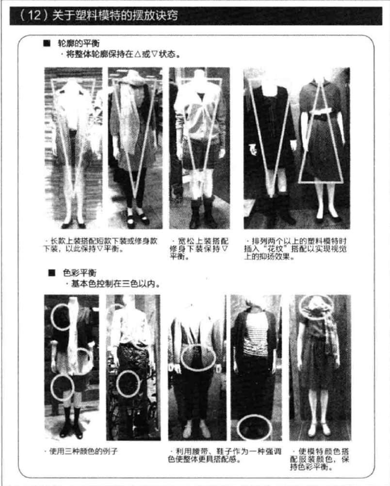
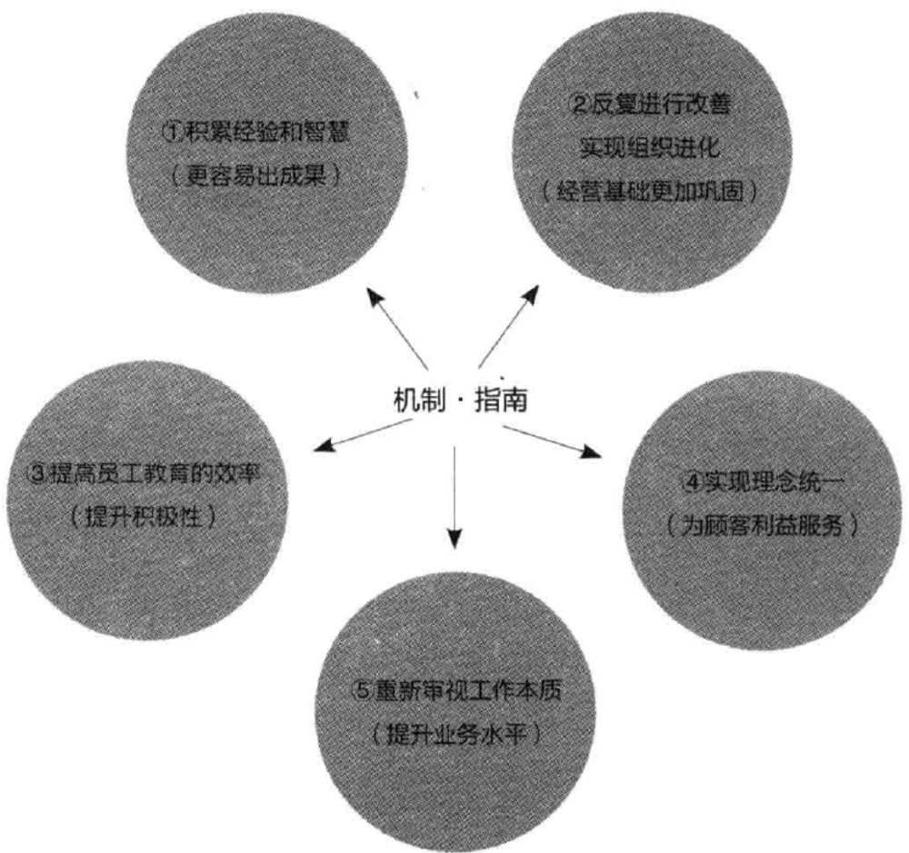
Study cues
- What problem of "the store manager not being there" is MUJIGRAM meant to solve?
- Write your process for doing an assignment as five steps. Which step currently exists only in your head?
20 世紀 50–80 年代中國、德國產品設計回望
Scope. This is a comparative book that places Chinese products alongside the industrial design of the two Germanys (the Federal Republic and the Democratic Republic) from the same period. The preface includes writing by Kan Tai-keung and others. Use it to understand that the look of a product is tied to economics, politics and technology.
Main ideas
- The German side includes the rational tradition of Ulm and Braun, and also the industrial design of East Germany under a different system. The two cannot be merged into a single look called "German design".
- East Germany was founded in 1949, almost at the same time as the People's Republic of China. The book uses this history to remind readers that before looking at a product, you need to know which country and which industry produced it.
- The Chinese side shows everyday goods under the planned economy: durable, standardised, and sometimes carrying the images and slogans of that era.
- The book does not judge which side is "more beautiful". It gives you the background to classify and compare.
Methods
- For any old product, first fill in four boxes: when, where, who made it, and who it was sold or allocated to. Only then write about its form.
- When comparing China and Germany, find one object from each with the same purpose (a lamp, a radio, a bicycle) and list the differences in three rows: function, material, decoration.
- Do not treat "German design" as a style filter. First ask whether it is a systematic West German product or an East German industrial product.
Study cues
- Why can "German design" of 1950–80 not be described as a single style?
- Choose an old object at home and write down the way of production it might reflect, not just whether it looks good.
無印良品世界觀
Author: Tadamitsu Matsui
Scope. Also by Tadamitsu Matsui, this book turns the camera overseas: how Muji opens stores in other countries, and why it prefers to go slowly. Read it together with 《解密無印良品》: one covers the system inside the store, the other covers expansion.
Main ideas
- The speed of opening stores is not the goal. The next store opens only after one store has paid back its investment and made a profit. This is to avoid the failure of opening fast and then pulling out.
- Here, "this will do" is a kind of speed: Muji does not compete with the fastest retailers on store numbers.
- When the same product goes to another country, both its price and the way it is used change. What local people see as a "cheap notebook" may have nothing to do with the Japanese sense of price.
- Products are adapted to local ways of use; for example, a bench can go beside a dining table, in a yard, or be used to hold things. The worldview is not about copying the Japanese store exactly.
Methods
- When discussing how a brand goes international, separate three things: how fast to open stores, whether to change the products, and what the price means locally.
- Take one Muji product and write down how its use in Hong Kong might differ from its use in the market described in the book.
- When you read the numbers (stores, countries), also read what the company refuses to do: it will not take on losses up front just to raise store numbers.
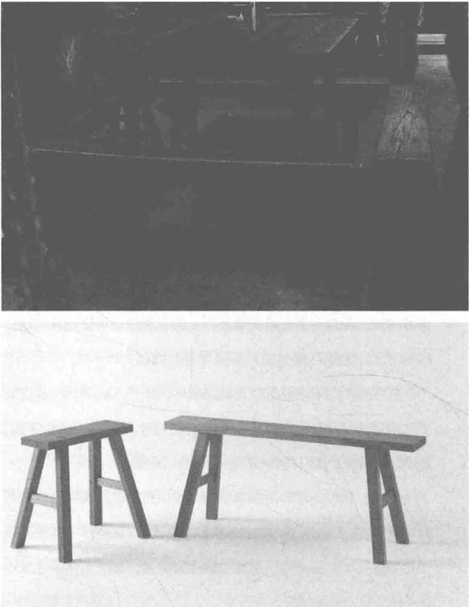
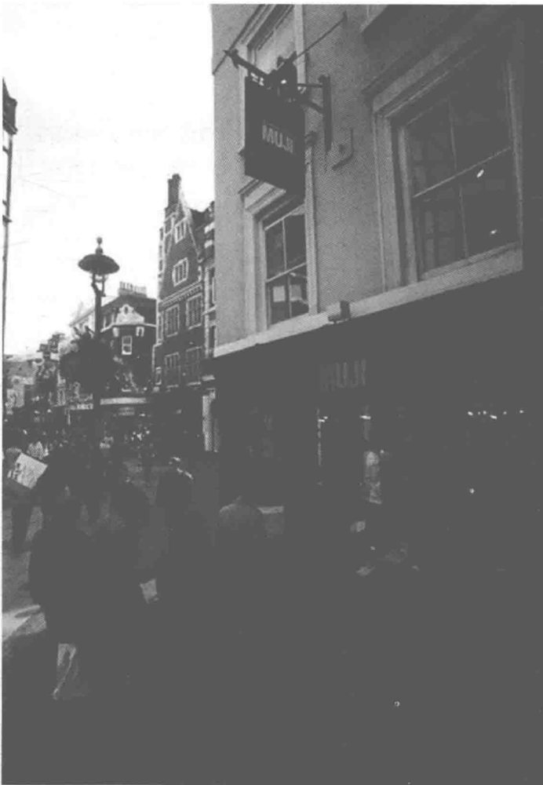
Study cues
- Why does Muji not treat "opening more stores" as its main goal?
- If you brought a storage product designed for small Japanese homes to Hong Kong, would you change its size, its material or the way it is used first? Why?
創新產品設計與手繪
Original title: Product Design Now
Author: Campos
Scope. This is a catalogue of process: products such as bicycles, home appliances and small tools appear beside the designers' sketches and short notes. Use it to learn "how sketches push a form forward", not to learn one particular drawing style.
Main ideas
- Sketches should come before polished renderings. The bicycle sketches in the book settle the riding position, the wheels and the storage at a very early stage.
- Good process drawings explain one specific problem: how to let people sit naturally, how to make a series look like one family, how to fit a compass and a whistle into a small tool.
- Product series use similar outlines so people recognise them as a set, then use details to tell the models apart.
- The relationship between the body and the object (where the hand grips, where the centre of gravity is) must be visible at the sketching stage; it cannot wait until the styling stage.
Methods
- Draw at least twenty small sketches for one proposal, changing only one variable in each (grip, seam, proportion).
- Write one sentence beside each sketch saying "what this one is solving". A drawing without a sentence is just line practice.
- When designing a series, first draw the shared outline, then draw two places that must be different, so you do not end up with copies of the same object.
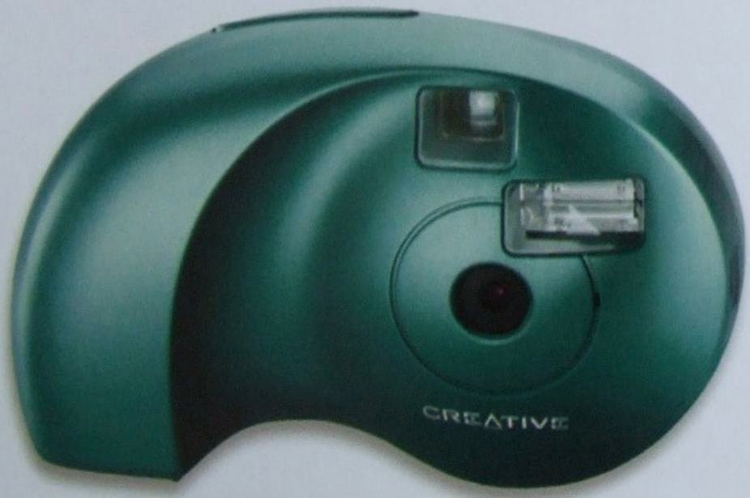
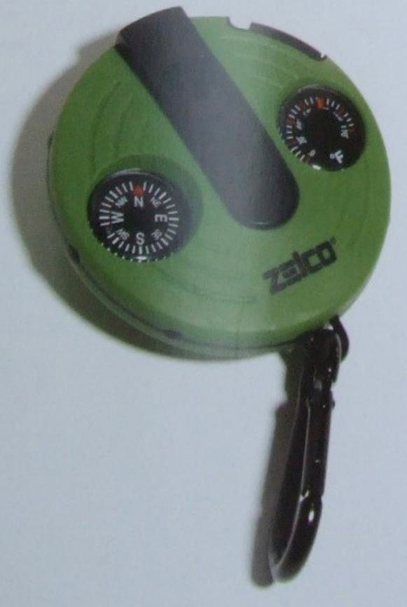
Study cues
- Why should a product series "look like one family from a distance, but show its model up close"?
- Draw six sketches for a water bottle, changing only one variable in each, and write that one sentence beside each.
深澤直人
Original title: Naoto Fukasawa
Scope. This is a catalogue of works and career: from Tama Art University, Epson and IDEO to returning to Japan to set up his own studio, becoming an adviser to Muji and working on ±0. Use it to understand the context of one person's work; for the detailed arguments, read it with 《意識的核心》.
Main ideas
- Naoto Fukasawa's path: product design education in Japan, IDEO in the United States, then back to Tokyo, where he put design into everyday brands rather than only making concept exhibitions.
- What his works share is very few parts, with tolerances and junctions handled so that nothing extra can be seen.
- Brands like ±0 make appliances look like everyday objects: humidifiers, clocks and small appliances, without stressing a high-tech look.
- The catalogue is best read in time order. Do not pull out a single product photo and treat it as a method.
Methods
- Make a timeline for this book with only eight points: education, first job, IDEO, return to Japan, Muji, ±0, key works, and your own one-sentence summary.
- For each product, write: which common part did it remove (buttons, screen, brand badge)? Can people still use it after that part is gone?
- Do not copy "rounded corners, white, a small screen" as the Fukasawa style. Write the behaviour first, then the form.
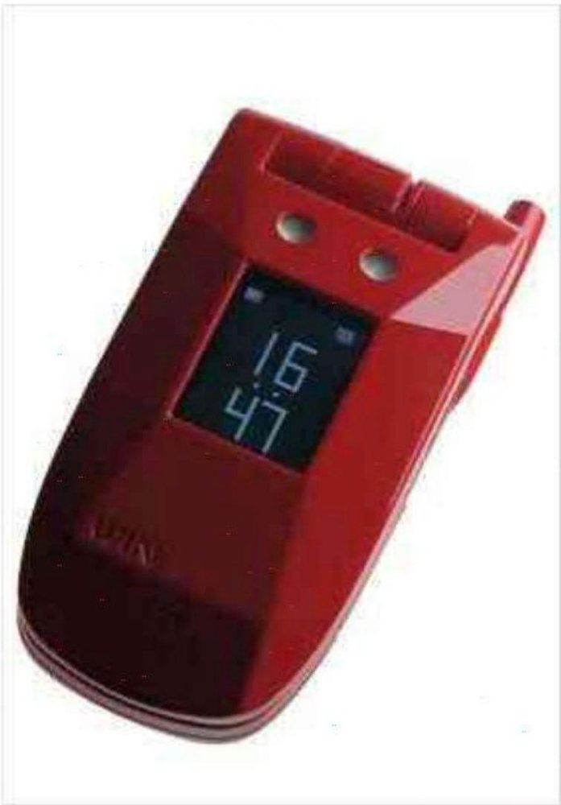
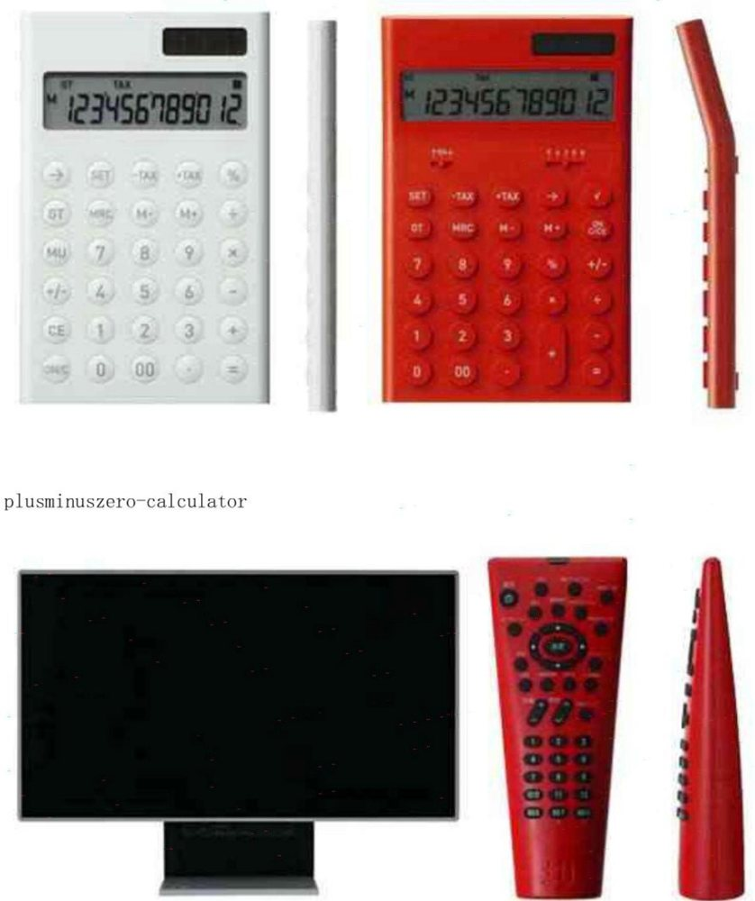
Study cues
- How might Naoto Fukasawa's time at IDEO have shaped the way he later worked as an adviser to Muji?
- Choose one of his products, point out a common part that has been removed, and explain whether its use is still clear.
意識的核心
Author: Naoto Fukasawa
Scope. This is a text in the style of a lecture about "design without thought". It is more useful than the catalogue of works when you write design statements: people often act without thinking first, because the environment already offers them clues about how things can be used.
Main ideas
- When designing a place to leave umbrellas, you should not first invent an "umbrella stand shape". Look first at how people relate to the wall and the entrance.
- The environment offers values for action: a log lying on its side makes people sit down; a grid railing makes people rest a milk carton on it; the dots of tactile paving make people stub out cigarettes on them. None of these are functions a designer wrote into a manual.
- Muji's wall-mounted CD player is the key example: pull the cord and it plays, like pulling a light switch or an extractor fan cord. People do not need to learn a new interface.
- Materials also carry memories. When the sheeting common on building sites is made into a bag, people know its character as soon as they touch it.
Methods
- Observation exercise: record five actions you "did without thinking" (sitting down, putting down a cup, pulling a cord, leaning while walking). Beside each, write which shape in the environment invited you.
- When designing an interface or product, borrow an action that already exists rather than inventing a new set of gestures.
- When writing a design statement, use this sentence pattern: "When people ___, they already ___, so this design keeps that action working."
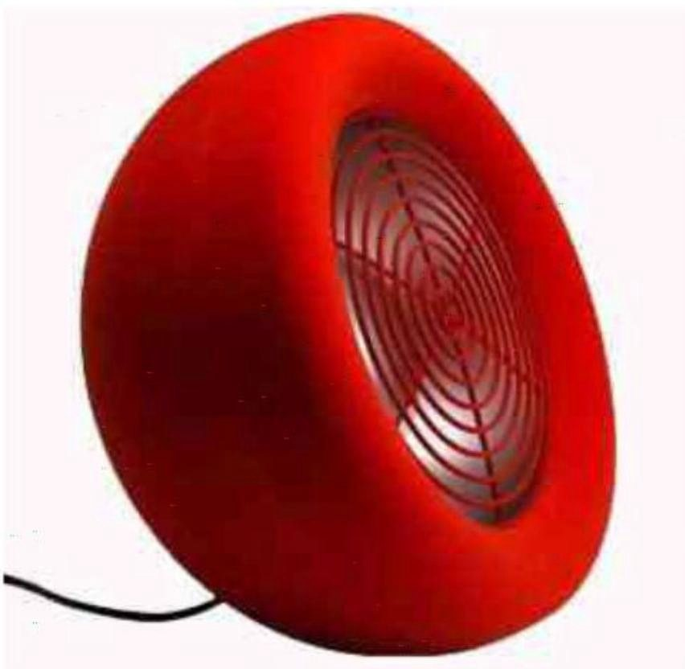
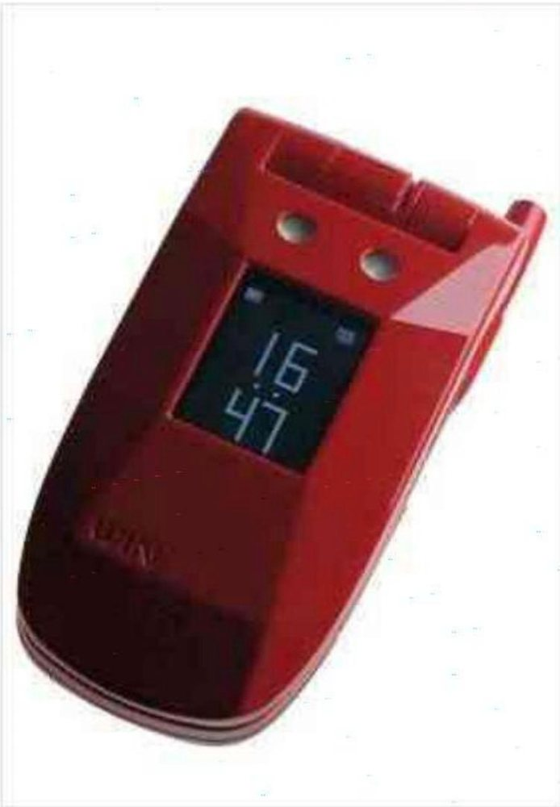
Study cues
- Use "the values the environment offers" to explain why people put cups on railings.
- Design a switch that users can operate without learning a new action. Which old action did you borrow?